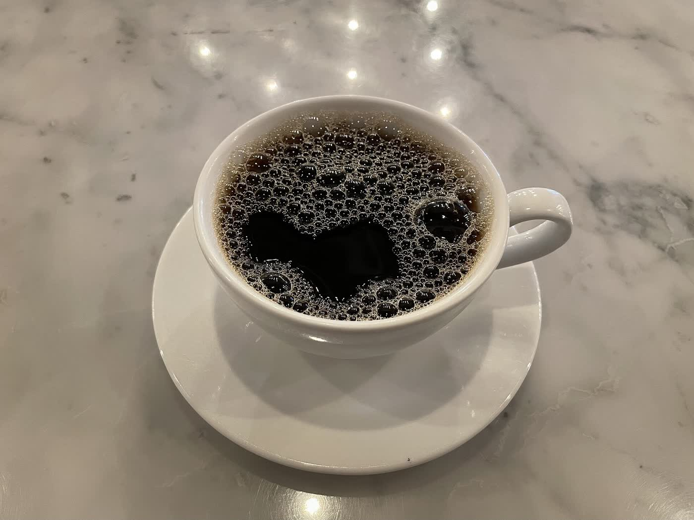
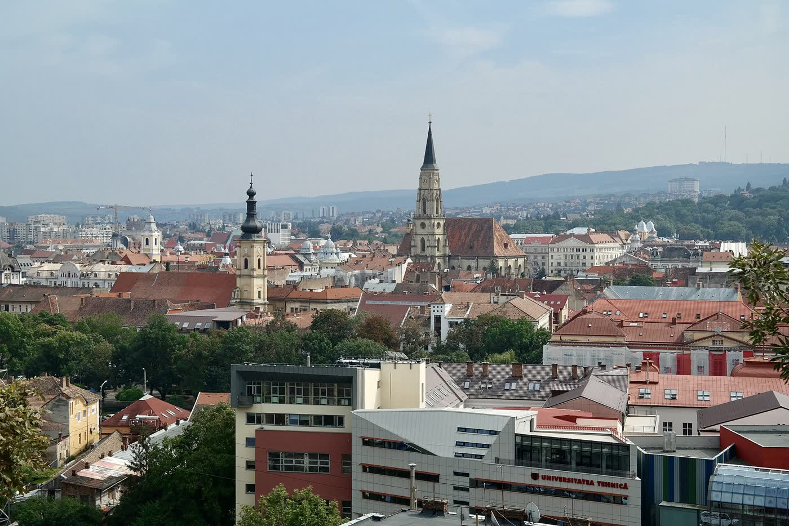

Program
- Luni până vineri07:30–16:00
- Sâmbătă și duminică09:00–16:00
Programul este cel publicat de European Coffee Trip. Alte listări dau ore ușor diferite. Confirmați înainte să treceți.
La Palatul Berde
Cameră de circa 15 m², la parter, lângă Someș. Wi-Fi, loc pentru laptop, opțiuni vegane. Copiii și câinii sunt bineveniți. Se acceptă cardul. Intrarea este accesibilă cu scaunul rulant.
Telefonul nu este publicat.
